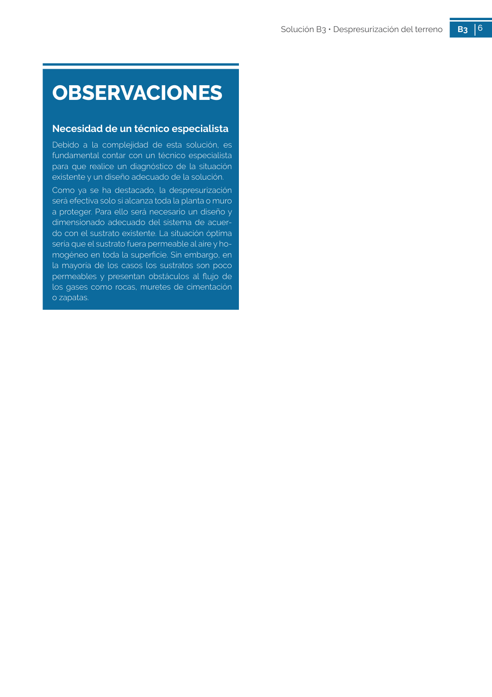

GUIA · Página 57 · versión sin-fecha
SHA256: e58e54b822cf4ab00e258f0eb50c0f06a8c04e3730a7f530d224485e2a5bb02e · página física 57 de 82 · métodos de encabezado
solo si están cotejados.
Formatos: Markdown · JSON de bloques · PDF p. 57 · imagen PNG
6 Solución B3 • Despresurización del terreno B3 6 OBSERVACIONES Necesidad de un técnico especialista Debido a la complejidad de esta solución, es fundamental contar con un técnico especialista para que realice un diagnóstico de la situación existente y un diseño adecuado de la solución. Como ya se ha destacado, la despresurización será efectiva solo si alcanza toda la planta o muro a proteger. Para ello será necesario un diseño y dimensionado adecuado del sistema de acuer do con el sustrato existente. La situación óptima sería que el sustrato fuera permeable al aire y ho mogéneo en toda la superficie. Sin embargo, en la mayoría de los casos los sustratos son poco permeables y presentan obstáculos al flujo de los gases como rocas, muretes de cimentación o zapatas.
